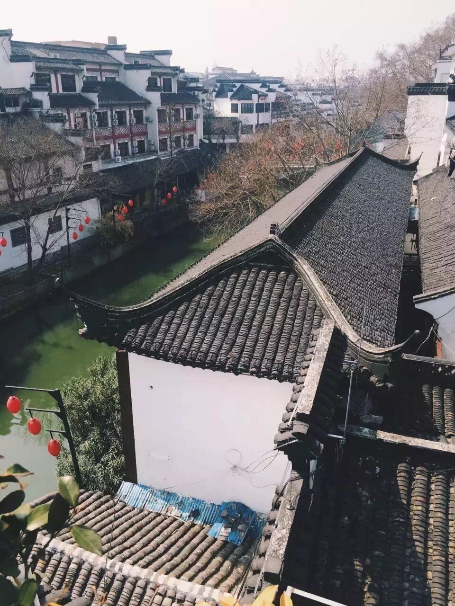

正文:
是的。
1.
上一次的读者见面会上，有个姑娘问我，周末都去干什么？
我想了一下，我有段很颓废的时期，别说周末了，每个假期都是一个宅女——躺在床上刷剧、躲在房间里消磨时间，不知错过了多少窗外曼妙风景。
去年年初，我终于决定要作出个改变，于是为自己定下了一个规矩：每个周末去一条新的街巷，每个月去一个新的城市旅行。
曾经我像很多人一样，拼命吐槽生活的无聊和陈旧，但事实上，生活本身哪有新意，全部的新意都源于你的脚步和目光。
如果人生可以划出分水岭，大概就是从那时候开始的——我从一个压抑无聊的宅女变成了一个时刻准备着仗剑天涯的人。
像我们这一代的“文艺青年”，大概都心心念念于海明威《流动的筵席》一书里所勾画的巴黎。
那些年轻的作家们徜徉在巴黎流光溢彩的街景中。他们谈论诗歌、也谈论玫瑰色的异乡。他们喝下啤酒，也喝下一片醉人月光。
虽然人人都在吐槽“文艺青年”，可我真的就这样变成了我曾经最想要成为的那种“文艺青年”——在原本单调乏味的工作之外，旅行、读书、写作。
在咖啡馆里、在路上、在海边、在异国他乡的梦里，甚至在一座遥远的海岛。
去新的地方，读新的书；看新的风景，写新的文字。
而我收获的，绝不仅仅是一篇游记，而是一个全新的自己。
2.
2016年的第一个周末，我兴高采烈地一个人跑去泡温泉。去得早，人又少，温水清冽如山泉。
零下近十度的寒冬室外，扎进热气腾腾的露天温泉。
氤氲的雾气里，喝一杯冰果汁，无人闲聊，无人寒暄。耳边想到的，是里尔克的诗：“谁此时没有房屋，就永远不必建筑；谁此时孤独，就永远孤独。”
我一个人，带着好似千军万马的灵魂。
三月的第一个周末在北京，我和好友为了帮他在微信运动里刷到第一名的步数，走了很久很久的路。幸好在那之前，我吃到了最好吃的麻辣香锅，要不这一路真是要累死了。
第一次路过望京SOHO，像一个闪闪发光的小星球。很多人把梦埋在北京，而我从未抵达。
我们不是北漂，但我们都漂在自己的梦里。
所以你也半夜三更、枕着城市流光溢彩的夜色苏醒，我也心无旁骛、闷头跑向一个又一个新的黎明。
那一刻，我们都是同样的人，不管在北上广，还是在故乡。
三月的第二个周末在南京，住在秦淮河边的青旅，清晨醒来，似乎能听到若有若无的水声。
临上飞机前还有时间，用手机查到周围的景点，于是遇见了这家小小的诗社。
我想到从前的自己，那么容易焦虑难过，可站在这座老旧的房子前，突然觉得释怀了。
时间流逝，风雨都变幻无常，谁知道百年之后如何，还不如这一秒，活得纵情坦荡。
3.
五月终于去了绍兴。
绍兴一直在我的心愿清单里，莫名迷恋。
鲁迅的文章几次三番要从教科书上撤下，新的一代永远不懂我们之于他的亲近。我九岁那年躺在暑假闷热的小床上看他的小说《铸剑》，看的心下寒凉。文艺的深刻，文学的深情，是他教的。
无奈去的那天大雨滂沱。我真是个不喜欢下雨的人啊，除非下雨的时候可以躲在家里，躺在床上，那时候的雨声才是动听的。
那天也出奇的冷，带了最单薄的衣服，踩在雨中整个鞋子都湿透了。
从绍兴站去鲁迅故居的时候，我一边打着哆嗦，一边在车上忍受晕车带来的极度恶心和不适。后来终于没忍住，急匆匆下了车，蹲在路边准备吐出来。
我和绍兴的第一个照面，彼此都很尴尬。
在沈园，雨还是很大。
三三两两的情侣在这个心形水池边拍照。我还是没有爱情，但对一个人的生活仍然心怀热望。
回去的时候，我去绍兴站坐火车。雨终于停了，窗外是绿油油的芭蕉树。
其他地方都是整饬一新的高铁站，和凝固的建筑。只有在这里，像久违了的故乡。
回到杭州后又去看了一次西湖，多少人说西湖美妙，可我几次来看都是不散的雾气。倒是九溪和西溪湿地更让我眷恋。
在西湖，我在一汪池水边看到一只绿色的小乌龟紧紧地附在池壁上，看的发呆。
仿佛看到自己，这么多年，始终谨慎、紧张、小心翼翼。只这一年，开心、舒展，再也不顾忌别人眼光。
我就是我，都按自己想要的方式活着。
4.
十一终于去了日本，回来之后写下《去了一趟日本，我明白了最重要的一件事》。而那件事是：独自上路，和过好当下最美妙的生活一样，需要的从来不是钱，而是勇气。
十一月路过青藏高原，雪在山顶，烈日暴晒下剔透的白让人睁不开双眼。
我在海拔三千多米的旷野上，看到大片大片的云朵漂浮在晶蓝的天空中，周围人都在客车上酣睡，我想大声疾呼，却没人可唤醒，只好无可抑制地悄悄落下热泪。
那是第一次为眼前的风景而流泪，你不知道人生几何，而这一秒，悠然千古，我不再是“一个人”，我是这天地的一部分。
人人都说佳期如梦，可之前的我觉得人生尴尬的时候多无聊的时候更多，所以那竟然是我第一次觉得，如此佳期，如此似梦，活着真好。
我还能看最蓝的天，最白的云，走最远的路，流最滚烫的泪。
5.
今年新年是在首尔过的。
站在首尔塔下拍到远处模糊的灯光和耀眼的铁塔时，我突然觉得自己好像回到了最赤诚的少年时期，因为街角出现了一栋粉色公主小屋一样的房子而欢呼雀跃，看每一个路过的陌生人都觉得新奇。
旅行的意义大概不是将手里的小棋插在地图上的每一个应许之地，而是在远离故土的千里万里之外，你永远能发现自己眼里有光，心中明亮。
我拍首尔塔时，有一对情侣闯入镜头。按下镜头的那一刹那，他正看着她笑，而她笑靥如花。
在人群里找了好久，把这张照片发给了他们。
他说这张真好，她说谢谢你啦，旅途愉快。
旁边一个韩国女生，短发一丝不苟，回眸时一瞥惊鸿。
天上并无星光，可我明明听见星光在沉沉坠落。
永远有人在相爱，永远有人正在年轻并将永远年轻。
你看这远山皱，浮云乱，只有眼前，青春岁月耀眼灿烂。
你我相逢世间一场，最难过最失落时只记得此生苦短，却常常忘了水远情长。
只有在如此山巅之上，你才能在眼前人流转的眼波里看到放肆的柔光。
看着汹涌的车流，默默感叹人生还是需要一些仪式感，让我们心底腾腾燃烧起一种麦芒和荣光。
而我也终于将自己从那片压抑的深渊里打捞了出来，看到了新的光，也听到了呼啸的风声。
就像那句话说的：“什么都想到达，什么都想闪耀。”
6.
我喜欢的作者简安说：“多住一个城市总是好的。”
再多去一个城市，也是我的向往。
这一路，也晕车也狂吐，也被高原烈日暴晒所伤，也有“累死了不出去了，这周末就在床上躺着好了”的时候，但大多数的时候，我愿意随手装上几件衣服、化妆包走向新的旅程。
异乡的山山水水也许并不比此处好，但我对“独自上路”习以为常，并沉迷深爱。
赚了钱的时候很开心的时候，我跑到另一个城市去听一场很小众的演唱会；没赚到钱的时候很不开心的时候，我也跑到另一个城市，跟自己说，你看这花花世界，美好的地方都想去，美好的事物都想买下，还是要努力啊努力啊。
朋友圈里总有人在旅行。
有人在印尼澄蓝的海里潜水，有人在小樽对着苍茫雪地泡温泉。
那么多动人之处，那么多人来人往。
生活不在别处，四海都是故乡。
余生太短了，想到还有那么多地方没去，那么多照片没拍，那么多清单上没有打勾，就觉得一定要拼尽全力加油，为了更美好之地，为了更闪耀的自己。
一次又一次的旅行，让我更加看清了自己。
还是想做那种最深情的人，尽管有人说深情往往不寿，千金的情义都敌不过汹涌欲望。
还是想做更酷的女生，走最远的路，拍最美的天空。
余生不图别人赞许点头，只求自己开怀尽兴。
你看我们才不是女汉子，我们都是女战士。
一身戎装在身，不管是小香风、晚礼裙还是冲锋衣、登山服；
向前可万里征战、杀伐决断，转身也能扎进厨房，为自己煮一碗热汤。
我们会各自拥有各自的广阔，也会拥有浪荡、不安、以及随后喷涌而出的奇迹。

——
想看伊心更多文章的，可以来公众号噢，找“伊心” （yixintongxue ）